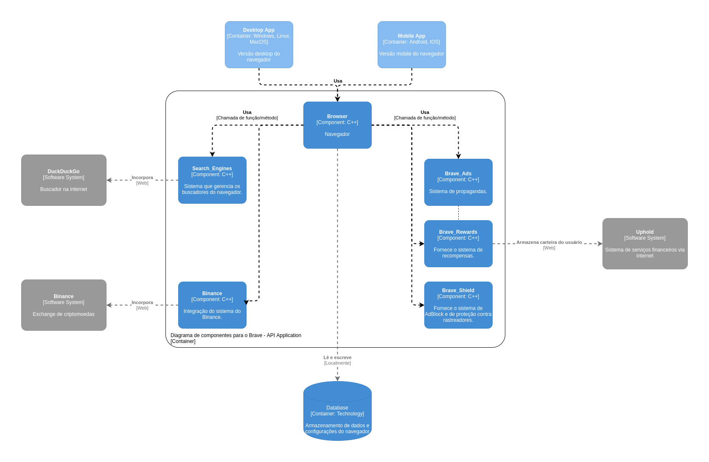

Documentação da arquitetura do navegador Brave
Autores
Este documento foi produzido por Luiggy Ferreira Dias Silva.
- Matrícula: 117211159
- Contato: luiggy.silva@ccc.ufcg.edu.br
- Projeto documentado: https://github.com/brave/brave-core
Descrição Arquitetural – Navegador Brave
Este documento descreve parte da arquitetura do navegador Brave. Essa descrição foi baseada principalmente no modelo C4.
Descrição Geral sobre o navegador Brave
O Brave é um navegador que tem como principal diferencial o pagamento de tokens aos usuários que visualizam as propagandas definidas pelo navegador utilizando uma moeda própria por meio da blockchain, além disso, possui um bloqueador de anúncios e rastreadores nativos que propõem mais privacidade ao usuário.
Contexto

O Brave é um navegador de internet que conta com um bloqueador de rastreadores e anúncios integrados e um sistema de recompensa para os usuários que visualizam suas propragandas (privadas). Essa recompensa é entregue via uma moeda virtual própia do navegador, e para armazenar essa moeda o navegador oferece uma conta no sistema financeiro da Uphold que trabalha com criptomoedas e as principais moedas do mundo. O Brave também tem integrado o sitema da exchange Binance, permitindo compra, venda de ativos e a verificação de saldos diretamente de um widget oficial dentro do navegador. O Brave também oferece nativamente a opção de usar o buscador DuckDuckGo fruto de uma parceria com o sistema.
Containers

O Brave pode ser utilizado na sua versão Desktop e também em sua versão Mobile, compartilhando das principais funcionalidades. Ambas versões possuem um database para armazenar os dados do navegador.
Componentes

O diagrama acima contém os principais componentes do sistema:
-
Browser: Responsável pela funcionalidade principal de possibilitar o acesso a internet.
-
Search_Engines: Responsável por disponibilizar os buscadores para o Brave. Esse componente que se relaciona com o buscador parceiro do Brave, o DuckDuckGo.
-
Binance: Responsável por se conectar com o sistema externo da Exchange Binance.
-
Brave_Ads: Responsável por gerenciar as propagandas do navegador.
-
Brave_Rewards: Responável por gerenciar as recompensas pelas visualizações das propagandas do Brave. Esse componente se relaciona com o sistema da Uphold.
-
Brave_Shields: Responsável por bloquear anúncios e rastreadores dos sites que o usuário visita.
Visão de Informação

A máquina de estados acima representa os possíveis estados que as extensões do navegador podem assumir. Uma extensão, após ser instalada, é automaticamente habilitada e o usuário pode desabilitar ou desinstalar a extensão.